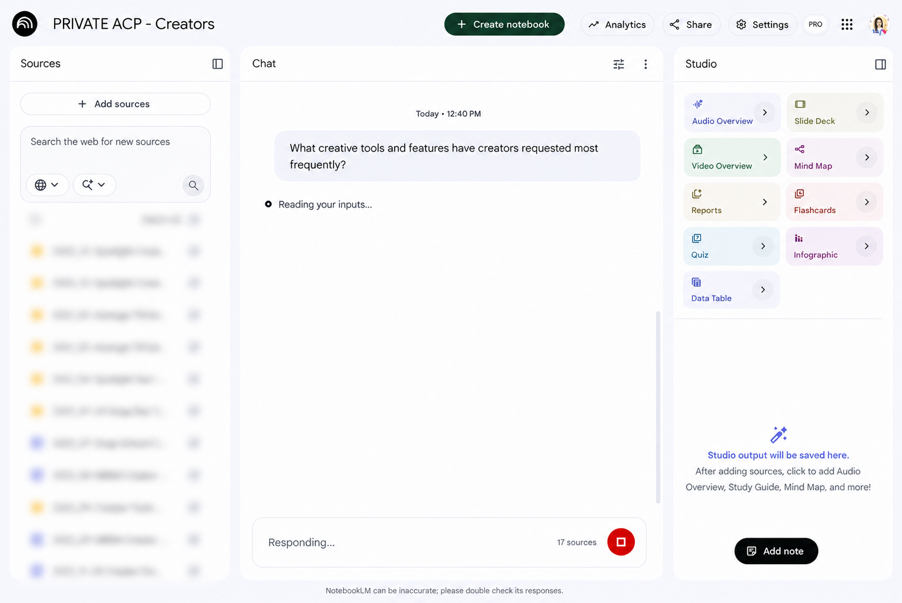
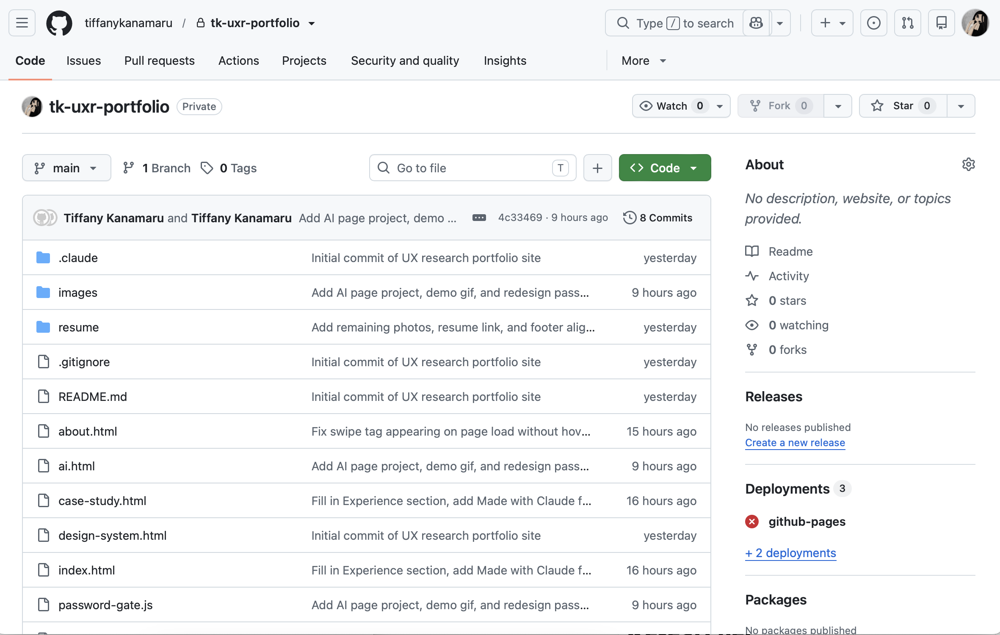
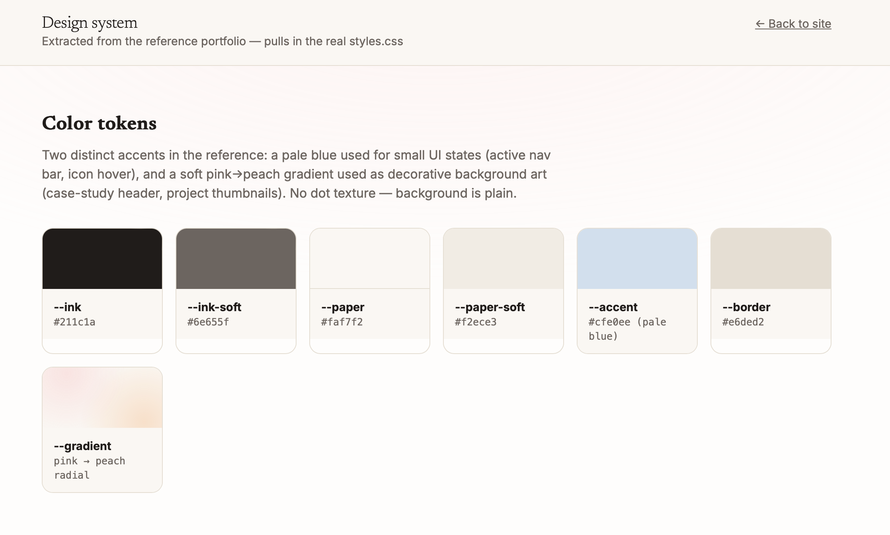

<title>AI — Tiffany Kanamaru</title>
<meta charset="UTF-8" />
<meta name="viewport" content="width=device-width, initial-scale=1.0" />
<link rel="preconnect" href="https://fonts.googleapis.com" />
<link rel="preconnect" href="https://fonts.gstatic.com" crossorigin />
<link href="https://fonts.googleapis.com/css2?family=Newsreader:wght@300;400;500&family=Inter:wght@300;400;500;600;700&family=Caveat:wght@500;600;700&display=swap" rel="stylesheet" />
<link rel="stylesheet" href="styles.css" />
<script src="password-gate.js"></script>

<aside class="sidebar" id="sidebar">
  <a class="logo" href="index.html">Tiffany Kanamaru</a>
  <div class="sidebar-icons">
    <button type="button" class="icon-btn" data-copy-email="tiffanykanamaru@gmail.com" aria-label="Copy email">
      
      <span class="icon-tooltip">Copy email</span>
    </button>
    <a class="icon-btn" href="https://www.linkedin.com/in/tiffany-kanamaru/" target="_blank" rel="noopener" aria-label="LinkedIn">
      
    </a>
  </div>
  <button class="nav-toggle" id="nav-toggle" aria-label="Toggle menu">
    <svg viewBox="0 0 24 24" fill="none" stroke="currentColor" stroke-width="2" stroke-linecap="round"><path d="M3 6h18M3 12h18M3 18h18"/></svg>
  </button>
  <ul class="sidebar-nav">
    <li><a href="index.html#work">Work</a></li>
    <li><a href="about.html">About</a></li>
    <li><a href="ai.html" class="active">AI</a></li>
    <li><a href="resume/Tiffany%20Kanamaru%20Resume.pdf" target="_blank" rel="noopener">Resume</a></li>
  </ul>
</aside>
<script>
  document.getElementById('nav-toggle').addEventListener('click', function () {
    document.getElementById('sidebar').classList.toggle('open');
  });
  document.querySelectorAll('[data-copy-email]').forEach(function (btn) {
    var tip = btn.querySelector('.icon-tooltip');
    var defaultText = tip.textContent;
    btn.addEventListener('click', function () {
      navigator.clipboard.writeText(btn.getAttribute('data-copy-email'));
      tip.textContent = 'Copied!';
      setTimeout(function () { tip.textContent = defaultText; }, 1500);
    });
  });
</script>

<main class="main">

<header class="section" style="padding-bottom: 0;">
  <div class="wrap">
    <span class="eyebrow">AI</span>
    <h1 style="font-size: clamp(2rem, 4vw, 3rem);">AI has become a core part of how I work as a UX Researcher</h1>
    <p class="hero-sub" style="font-size: 1rem;">AI has become a core part of my daily workflow. I use it to build internal tools to make conducting research faster, and create interactive reports and tools that help stakeholders better understand research insights. I'm constantly learning new ways to incorporate AI into my work, and I&rsquo;m excited to see how it will shape the future of UX research.<br><br>Below are a few examples of things I have created with AI.</p>
  </div>
</header>

<section class="cs-section" style="padding-top: 0;">
  <div class="wrap">
    <h3>Qual Research Setup Tool</h3>
    <p>Using Claude, I built an internal tool to streamline the setup of qualitative research studies. Our team works with an external recruitment vendor and preparing each study involved several repetitive, manual steps. I built a tool where a researcher can upload a research plan and the tool will automatically generate a study schedule based on the researcher&rsquo;s calendar, draft participant screeners, and prepare the materials needed to send to the vendor.</p>
    <div class="cs-demo-gif-wrap">
      
    </div>

    <h3>Interactive Reports</h3>
    <p>Research insights are often spread across multiple studies, making it difficult for stakeholders to see the bigger picture. I used AI to create an interactive report that synthesizes my research on how creators make short form videos on Snapchat into a single user journey map. Stakeholders can explore each step of the creation process, understand key pain points, and see how insights connect across the end to end experience.</p>
    

    <h3>Research Insights Library</h3>
    <p>Stakeholders often need quick answers about our users based on past user research, which previously meant reaching out to me on Slack to find reports or answer questions. To make it easier for stakeholders to find answers on their own, I created an AI research assistant using NotebookLM that allows them to ask questions across our research repository. I added safeguards to make sure it stayed grounded in the research and avoided answering questions that weren't supported by existing findings.</p>
    

    <h3>My UXR Portfolio</h3>
    <p>I used AI to help me build this portfolio. I used it to explore visual directions, define the design system, iterate on layouts, and refine interactions and animations.</p>
    <div class="cs-stack-images">
      
      
    </div>
  </div>
</section>

<footer>
  <div class="wrap footer-wrap">
    <span class="footer-copyright">
      <span style="font-family: var(--font-script); font-size: 1.3rem; color: var(--ink-soft);">Made with Claude </span>
      &copy; 2026 Tiffany Kanamaru
    </span>
    <span style="display:flex; flex-direction:column; align-items:flex-end; gap:2px;">
      <span style="font-family: var(--font-script); font-size: 1.3rem; color: var(--ink-soft);">Let's chat!</span>
      <a href="mailto:tiffanykanamaru@gmail.com">tiffanykanamaru@gmail.com</a>
    </span>
  </div>
</footer>

</main>
